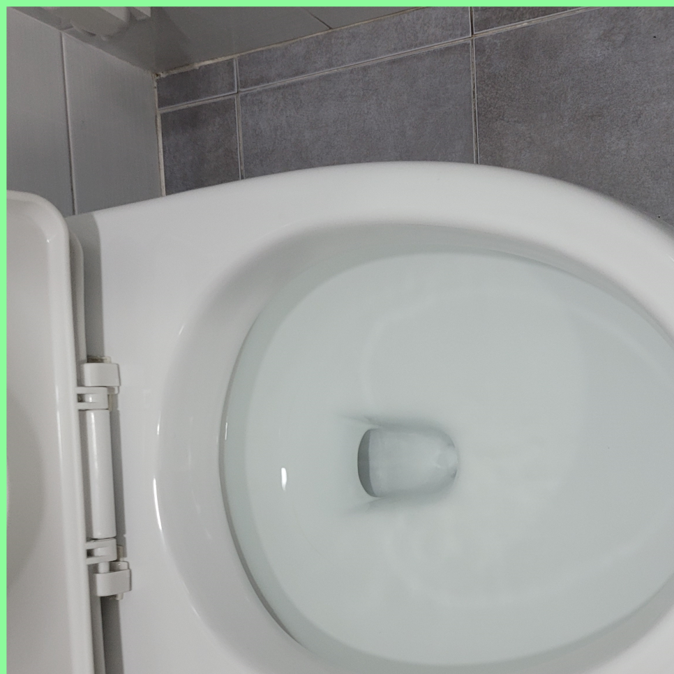
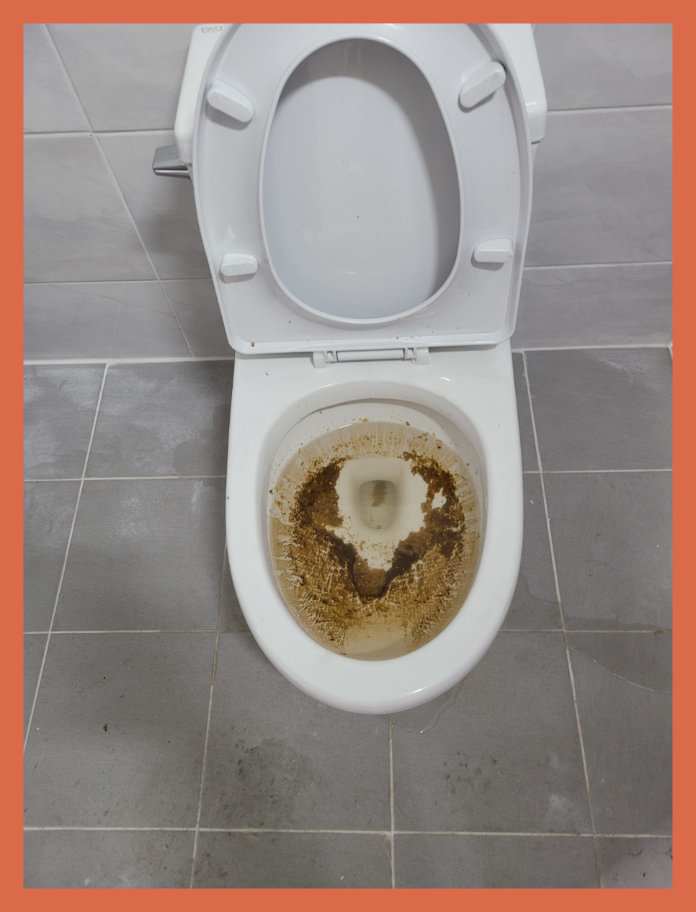
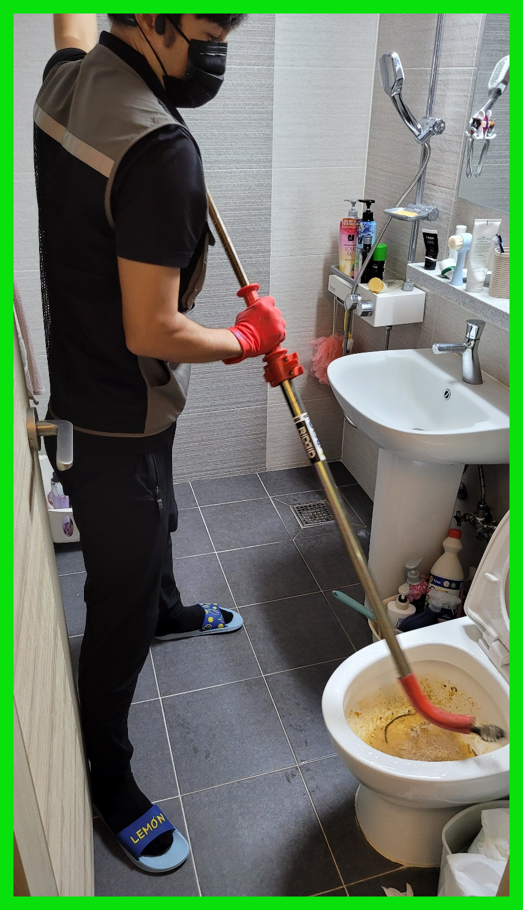
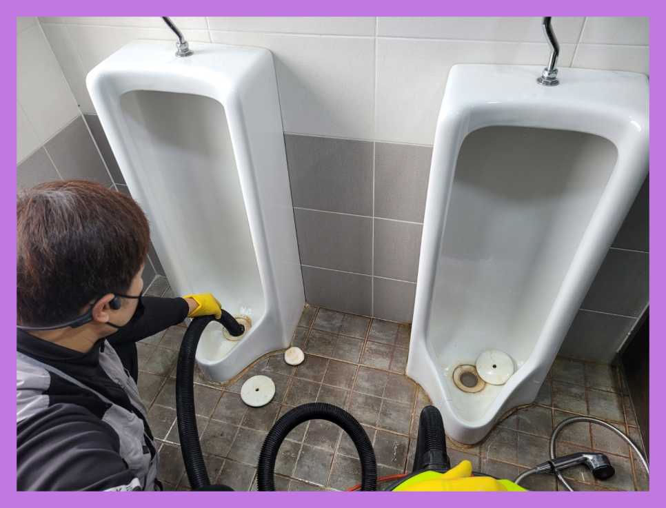
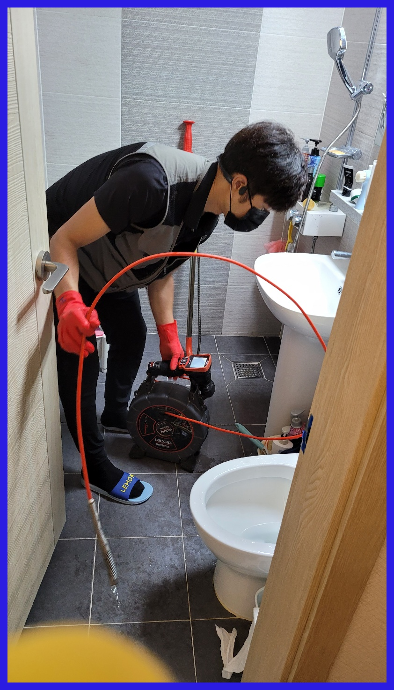
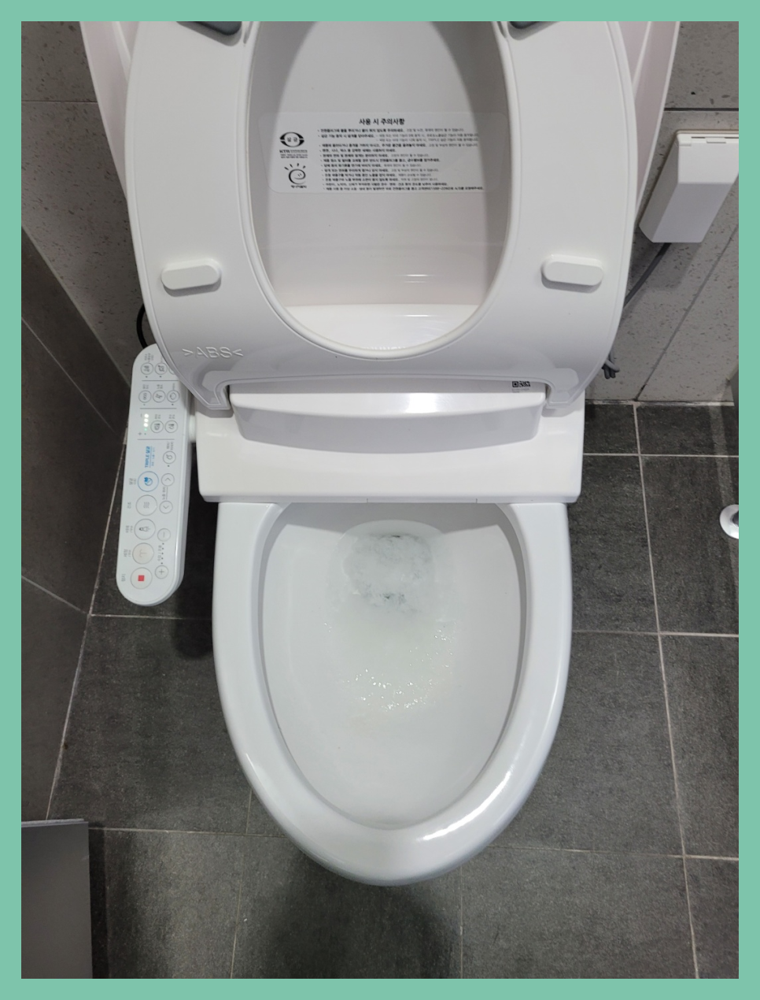

🏠 수원 정자동 대변기막힘 율천동 변기뚫는곳 수리업체
수원 싱크대막힘 전문 시공 후기

📋 작업 개요
- 위치: 수원
- 서비스 유형: 싱크대막힘, 변기막힘, 하수구막힘, 배관막힘, 역류해결, 뚫는업체, 배관청소, 고압세척
- 작업 일시: 2024. 1. 5. 16:26
- 업체명: 하수구수사대 (010-5615-2118)
🔍 문제 상황
어서오세요
설비전문업체 "하수구수사대"를 찾아주셔서 고맙습니다.
저희는 배출구내시경 장비를 꺼내서 렌즈 부분을 깨끗하게 닦은 뒤 다시 한번 넣어봤습니다. 화면을 통해보니 배출구배관 속이 보이지 않을 정도로 이물질이 가득 차있었는데요, 먼저 이물질이 가득 쌓인 곳을 중심으로 관로 탐지기로 작업 위치를 탐색해 봤습니다.
수원 정자동 대변기막힘 율천동 변기뚫는곳 수리업체

🔎 원인 분석
💡 전문가 진단: 수원 정자동 대변기막힘 율천동 변기뚫는곳 수리업체
하수도 내부에 어느 정도 이물질이 쌓여있는지 확인하기 위해서는 내시경 카메라를 넣고 원인을 파악하는데요. 기름 슬러지가 원인이 되어 막혔다면 내시경 카메라가 뿌옇게 보이기 때문에 일단 석션 장비로 통수 작업을 시켜준 뒤에 내시경을 다시 넣게 됩니다.
전문적으로 원활하게 해결방안이 되지 않아요! 뚫어내기 위해선 최신장비도 없으면 안되고 체계적으로 해결방안을 하지 않는 곳도 확인하고 결정하시는게 좋을 듯합니다. 준비되어 있지 않은 곳에서 그냥 뚫게 된다면 앞서말씀드린 것처럼 혼자 셀프로 뚫는것과 같은 현상이 일어나는거죠. 핵심이 되는 문제는 없어지지 않기 때문에 빠른 시일내에 재발하게 된답니다.
배수작업 도중에 혹시 무슨 일이 생길 수도 있으니 크란즐과 로덴베르거라는 전동 스프링기도 준비해서 대비를 하기로 했습니다. 앞쪽 입구에서만 접근이 가능하며 작업에도 한계가 잇는 상황이기에 강력한 전용장비를 사용하면서도 속도를 조절해야 했습니다.
그리고 퇴수구 내시경으로 내부에 있는 이물질들이 모두 제거가 되었는지를 확인하는 작업을 하였는데요. 퇴수구내시경으로 배관 내부 곳곳을 확인을 하면서 작업을 마무리하였습니다. 퇴수구 막힘은 이렇게 전문 업체를 통해서 해결을 하시는 것이 가장 빠르고 확실한 방법이라고 할 수 있는데요.
배수관으로 배수가 안되거나 느리게 넘치고 있다면 이러한 것들을 고쳐드리는 경력자를 찾아내서 실력자를 이용하셔야 합니다.배출구막힘 무수히도 많은 업체들이 있는데 업차마다 다른 점이 있어서 신중을 기해야 합니다.

🔧 작업 과정
이러한 이물질을 제거하기 위해서는 이물질 및 물을 제거하는 석션기를 이용해야 합니다. 그러고 나서 고압세척을 통해 퇴수 내부 깊숙이 있는 덩어리를 제거해 주어야 해요.
오직 퇴수뚫어버리는것만 하지않고 트랩을설치하거나 큰작업까지도 일상에서 중요한 전부를해드리고있어요.퇴수문제를 혼자서하시기 어려우시면 저희팀에게 의뢰하시면돼요 복잡한현장이라도 열의를다해 뚫어드리고있어요.
다수의전문회사들이 비싼기계를 가지고있는게아니라서 하수관가 막혀있는곳으로 출동했다가 필요하지않은 기계들만있기때문에 수리가안되기에 되돌아가는일도 많이있어요.거기다가 비용을추가로 달라하는경우도 꽤많기에 하수관뚫지못했는데도 금액을내야하는 이와같은일들이 일어나게됩니다.
아무래도 고객분의 입장에선 한 번에 문제를 해결하길 바라실 텐데 또 비슷한 말썽이 발생하니 짜증이 나거나 화가 나실 수도 있을 것입니다. 게다가 배출관나 배관에 문제가 생기게 되면 당장 물을 사용할 수 없으므로 그게 화장실이든 부엌이든 일상생활에 불편함을 겪을 수밖에 없습니다.
저희는 해결 작업을 하고 나면 대충 하는 것이 아닌, 고객의 요청에 따라 하수내시경 카메라를 사용하여 세밀한 조사를 진행합니다. 만약 오수관 작업을 뺀 샤프트 시공이 필요하다면, 이를 거쳐 문제를 해결해 드립니다. 또한, 하수 고압세척 외에도 배관 내부의 상태를 정확히 파악하기 위해 관로 탐지기를 사용하기도 합니다.
악취가 났던 하수도에서 감쪽같이 악취가 사라져서 너무 고맙다고 하신 고객님을 보면서 보람차다는 느낌을 받는데요. 고객님의 답답하고 막막한 상황을 누구보다 이해하기에 저희들은 합리적인 가격으로 최고의 서비스를 해드리고 있으니 배관 관련 문제가 있다면 언제나 찾아주세요.
또한 시공이 필요한 지점도 관로 탐지기를 통해 발견, 사장님께 알려드렸습니다. 저희는 이처럼 작업의 규모를 가리지 않고 빠르게 출동하여 해결을 도와드립니다.
고객님의 소중한 시간을 이런 하찮은 일이 낭비하지 마시고 배출구 전문가에게 맡기세요. 깐깐한 고객님도 신뢰하는 저희들의 실력은 이 분야 최고입니다. 최고의 서비스로 고객님을 만족시켜드리는 성실하고 정직한 저희를 믿어보세요.


✅ 작업 완료
배수관문제 문의하시면 기본적인 금액 정도는 상담 가능하시니 의뢰하고 싶으시거나 더 늦어지기 전에 막힌 하수구를 뚫어보고 싶다면 편한 마음으로 통화 걸어주시면 되십니다.
#하수구막힘 #하수구뚫음 #하수구역류 #씽크대막힘 #싱크대역류 #오수관막힘 #하수구청소 #욕실하수구막힘 #변기막힘 #하수구뚫는비용 #싱크대수리 #화장실막힘




⚠️ 주방 싱크대 배관 막힘 예방 수칙
- ✅ 기름기가 묻은 식기나 프라이팬은 설거지 전 키친타올로 반드시 기름때를 닦아내세요.
- ✅ 주기적으로 싱크대 개수대에 뜨거운 물을 가득 받아 한 번에 내려 배관 내부 기름을 씻어내세요.
- ✅ 배수구 거름망을 미세한 필터로 사용하시고 음식물 찌꺼기가 틈으로 새어 들지 않게 관리하세요.
- ✅ 베이킹소다와 식초를 뜨거운 물과 함께 일주일에 한 번씩 부어주면 배관 살균과 막힘 예방에 좋습니다.
💡 핵심 정리
- 확실한 장비 작업(내시경 점검 및 샤프트 스케일링)으로 원인을 뿌리 뽑습니다.
- 작업 후 1년 이내에 동일한 부위 재발 시 100% 무상 A/S 서비스를 보장합니다.
- 서울 · 경기 · 인천 전 지역에 24시간 언제든 긴급 출동할 수 있도록 항시 대기 중입니다.
❓ 자주 묻는 질문 (FAQ)
🚨 수원 싱크대막힘 문제로 고민이신가요?
정확한 원인 진단과 확실한 시공으로 재발 없는 해결을 약속드립니다.
24시간 긴급 출동 | 서울 · 경기 · 인천 전지역 | 1년 내 재발 시 무상 A/S